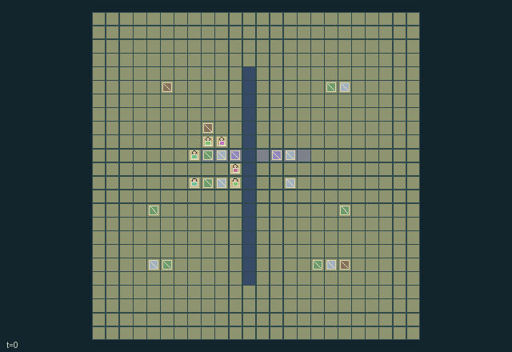

GI214 · Magnet Frontier

Choose exploration, mining, crafting, route construction, grid operation or repeatable freight goals in a finite 24x24 frontier.
Identity and original contract
6 independently actionable roles; 28 discrete commands per role; 938 native observation columns per role; original horizon 384 steps. Declared per-step reward range: -3 to 6. Observation regime: fully_observable.
Source SHA-256: 3a95595a4884c363195d29b2f7ca9caf00b8b92a91227d12f6fd5562005c959d
The objective, rewards, population, map and horizon remain original. A preview is not a success claim.
Objective and gameplay
Choose exploration, mining, crafting, route construction, grid operation or repeatable freight goals in a finite 24x24 frontier.
Specialist production and transfer feed shared magnetic infrastructure. A powered polarity choice changes multiple loose cargo positions; anchors, jams, finite bus power and bridged gaps alter peers' available routes and work.
- Six reusable specialist kits divide mining, timber, magnetic construction, power, hauling and brace building.
- Ore becomes coils; coils plus timber become magnets. Timber becomes braces for bridges, anchors and repairs. Ore plus timber becomes power packs.
- Face or aim toward a cell before construction. Rails and bridged gaps persist; long perimeter routes remain available.
- All magnets share a 32-unit bus. Each requested mount costs one charge; insufficient total charge powers none.
- Fields sum pull/repel vectors within native radius four. Their combination can redirect, pin or jam several loads.
- Manual lifting bypasses magnetic routing; braced cargo stays fixed until lifted. Brace repair restores jammed/damaged freight.
- Optional contracts consume mine stock when the original freight body replenishes after its cooldown.
- Dry solar pulses and rainy timber renewal are native cycles. The world truncates at 384 without a compulsory quest terminal.
Ending: No natural success/failure terminal is imposed in this persistent world. Native terminated remains false; tick 384 is the truncation window. Delivering freight or building a route never resets the world.
What this game explores
Commitment, exchange & governance: Promises consume time, liquidity, access or material. Separate an announced agreement from a binding commitment and from its eventual delivery; log cancellation and expiry too.
Complementary production & service: A useful outcome requires ordered stages, scarce equipment or another role's capability. Measure real completed products and resource circulation rather than counting intermediate actions as success.
Joint transport & shared access: Positions, load geometry, occupancy and persistent access constrain whose action can succeed next. Distinguish physical handoff, shared controls and simultaneous force from a cosmetic cooperation label.
Survival, protection & rescue: Protection and repair alter another role's future feasible actions. Record losses, exposure, rescue and infrastructure as well as delivery; survival is determined by the actual kernel.
These are questions supported by rule structure, not observed learning effects.
Play it: operating walkthrough
crucibles play --game gi214Keep Python running and open its printed address. Select this game, set a seed and press Create session. The game itself is always English.
Assign a role range to Host with Assign / take over, or Assign all roles. Invite a second participant with Create player invitation, then assign a disjoint subset. Every original role is available.
For every owned role choose a legal command and press Queue. Arrow keys / WASD queue a declared directional action for the current role camera when available. Space or Advance one joint step advances everyone together. Non-directional games use the selectors.
Unqueued roles use the labelled untrained uniform-legal policy. Take over or release roles before the next step without resetting. Full-state debug is privileged and permanently logged; role cameras preserve permissions. Close the session to retain logs. Server restart does not restore sessions.
Complete command reference
IDs and English labels exactly match the manifest. Availability depends on role, resources, location and phase. An available action can still have no productive effect.
0·Wait
1·Walk north and face north
2·Walk east and face east
3·Walk south and face south
4·Walk west and face west
5·Gather ore with miner kit or timber with saw kit beside matching node
6·Lift lowest-index adjacent loose cargo; miner or hauler only
7·Put held cargo at current tile
8·Craft a coil from two ore at workbench; engineer
9·Craft a brace from two timber at workbench; builder
10·Craft a power pack from one ore and one timber at workbench; electrician
11·Build a magnet on front tile using one coil and one timber; engineer
12·Lay front rail using one ore and one timber; engineer
13·Bridge a front gap with one brace; builder
14·Toggle nearest adjacent mounted magnet
15·Reverse nearest adjacent magnet polarity
16·Dismantle front magnet and recover one coil; engineer or builder
17·Load one power pack into bus at workbench for eight charge; electrician
18·Deliver held cargo at its matching destination; starts its mine replenishment cooldown
19·Select next carried resource: ore, timber, coil, brace, pack
20·Give one selected resource to lowest-index adjacent peer with room
21·Repair or unjam adjacent cargo with a brace; hauler or builder
22·Hand-crank one charge at the workbench
23·Anchor adjacent loose cargo with a nonmagnetic brace; builder
24·Aim north without moving
25·Aim east without moving
26·Aim south without moving
27·Aim west without moving
Roles and capability identifiers
These original role names describe capabilities, not interchangeable skins. Check each owned role's legal selector before planning handoffs.
agent_0·Miner with reusable pick kit; ore gathering and manual cargo lifting
agent_1·Woodcutter with reusable saw kit; timber supply
agent_2·Magnetic engineer with reusable wrench; coils, mounts and rails
agent_3·Electrician with reusable winding kit; battery packs and bus charging
agent_4·Freight hauler with reusable sling; lifting and recovering loads
agent_5·Brace builder with reusable clamp kit; bridges and cargo anchors
Information and observation permissions
Fully observable native world: every role sees the same flattened map, crews and inventories, reusable tools, node resources, magnet settings/actual supply/radius, cargo holders/jams/anchors/integrity, facilities, shared charge/weather and reward-component state. Inactive capacity slots remain explicit in observations and are not rendered as active objects.
The GIF is full-state debug and may reveal hidden entities or private state. Train on obs[agent], not the picture, state tree or another role's private row. Field slices and visibility are in the original manifest.
Reinforcement-learning integration
import jax
from crucibles_jaxmarl import make
env = make("gi214")
key = jax.random.PRNGKey(0)
key, rk, ak, sk = jax.random.split(key, 4)
obs, state = jax.jit(env.reset)(rk)
actions = env.sample_actions(ak, state)
obs, state, rewards, dones, info = jax.jit(env.step_env)(sk, state, actions)
done = dones["__all__"]Observations are float32 vectors of width 938; actions are scalar int32; masks have 28 entries. Supply all 6 roles each transition. Masked sampling is an engineering reference, not a trained learner.
step_env retains terminal data without reset. step performs outer autoreset and keeps terminal data in info["raw_state"] and info["raw_observation"]. Use dones["__all__"] for episode boundaries; separate completion, failure and time limit in analysis.
JIT or vmap equal identities and shapes. Split independent reset, policy and transition keys. Group different shapes explicitly; do not shrink the population or horizon. Host rendering stays outside training.
Training questions and fair evaluation
Define valid completion from the objective before fitting. Preserve original rewards and also report real deliveries/services, losses, resource state, unresolved episodes and per-role returns. Animation is not a reward signal.
Promises consume time, liquidity, access or material. Separate an announced agreement from a binding commitment and from its eventual delivery; log cancellation and expiry too.
A useful outcome requires ordered stages, scarce equipment or another role's capability. Measure real completed products and resource circulation rather than counting intermediate actions as success.
Positions, load geometry, occupancy and persistent access constrain whose action can succeed next. Distinguish physical handoff, shared controls and simultaneous force from a cosmetic cooperation label.
Protection and repair alter another role's future feasible actions. Record losses, exposure, rescue and infrastructure as well as delivery; survival is determined by the actual kernel.
Compare memory, communication or centralized critics under matched actor information. Declare critic access; keep actor inputs role-filtered. Match partner/opponent distributions, masks, compute and checkpoint selection. Final tests never enter fitting or selection.
Independent training runs or source-pairing blocks are inferential units; episodes from one policy are not independent training replications. Save hashes, keys, versions, device, time and cost. Negative, zero, failed and indeterminate outcomes are valid. No trained checkpoint or target score is supplied.
Classification and evidence
Overlapping editorial labels are reading aids, not proof of novelty, difficulty, strategic equivalence or learning effects.
- Commitment, exchange & governance
- Evidence
scene.rules.6: Optional contracts consume mine stock when the original freight body replenishes after its cooldown.
- Complementary production & service
- Evidence
manifest.actions.21: Repair or unjam adjacent cargo with a brace; hauler or builder
- Evidence
scene.rules.1: Ore becomes coils; coils plus timber become magnets. Timber becomes braces for bridges, anchors and repairs. Ore plus timber becomes power packs.
- Evidence
scene.rules.5: Manual lifting bypasses magnetic routing; braced cargo stays fixed until lifted. Brace repair restores jammed/damaged freight.
- Joint transport & shared access
- Evidence
manifest.task.objective: Choose exploration, mining, crafting, route construction, grid operation or repeatable freight goals in a finite 24x24 frontier.
- Evidence
manifest.actions.6: Lift lowest-index adjacent loose cargo; miner or hauler only
- Evidence
manifest.actions.7: Put held cargo at current tile
- Survival, protection & rescue
- Evidence
scene.rules.5: Manual lifting bypasses magnetic routing; braced cargo stays fixed until lifted. Brace repair restores jammed/damaged freight.
Source, receipts and preview limits
The world-only English GIF replays saved untrained legal actions through the original kernel. At most 25 actual endpoints include initial and terminal state; no invented interpolation. It is full-state debug, not the role observation.
Original source, observation slices, manifest and mechanism
Native receipt · Presentation receipt
Engineering passes do not establish learning. Nonzero floating differences remain recorded and undetermined; no new tolerance was introduced. Human scores remain unverified.